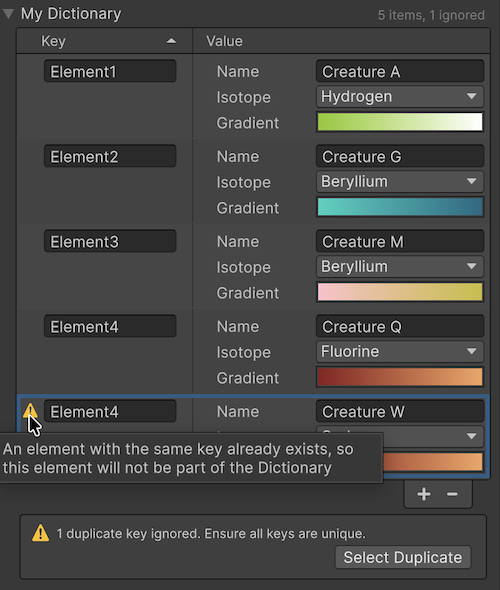

Unity serializes fields declared as Dictionary<TKey, TValue> directly, so you can author dictionary data in scripts and edit it in the Inspector window without writing custom serialization code. The declared field type must be exactly Dictionary<TKey, TValue>.
Dictionary serialization is opt-in: you must apply [SerializeField] to each dictionary field that you want Unity to serialize. Unity only supports certain types as dictionary keys and values. The serialization rules analyzer detects unsupported key and value types at compile time and points to the rule that explains the limitation. The InspectorA Unity window that displays information about the currently selected GameObject, asset or project settings, allowing you to inspect and edit the values. More info
See in Glossary renders a two-column key/value editor with sort, duplicate-key detection, and column resizing.
Unity serializes a dictionary as a sequence of key/value pairs in insertion order. The order shown in the Inspector is independent of the serialized order. Refer to Sort order in the Inspector.
You can serialize a dictionary field on a MonoBehaviour, a ScriptableObject, or any nested [Serializable] class or struct. Apply [SerializeField] to a private or a public dictionary field, to make Unity serialize the dictionary:
using System.Collections.Generic;
using UnityEngine;
public class Inventory : MonoBehaviour
{
[SerializeField]
private Dictionary<string, int> itemCounts = new Dictionary<string, int>();
}
Public dictionary fields aren’t serialized automatically. Without [SerializeField], Unity skips the field, and the dictionary doesn’t persist across domain reloads, sceneA Scene contains the environments and menus of your game. Think of each unique Scene file as a unique level. In each Scene, you place your environments, obstacles, and decorations, essentially designing and building your game in pieces. More info
See in Glossary saves, or Play mode transitions. The analyzer reports UAC1015 when a public dictionary field is missing [SerializeField], so you can decide whether to opt in or to mark the field [NonSerialized].
[SerializeReference] isn’t valid on dictionary fields, because Unity serializes a dictionary as an inline collection of entries rather than as a polymorphic single reference. The analyzer reports UAC1014 if you apply [SerializeReference] to a dictionary field.
Both TKey and TValue must be types that Unity can serialize:
int, float, double, bool, string).Vector2, Vector3, Color.[Serializable].UnityEngine.Object.As a key or a value, you can’t use an interface or an abstract type (other than a UnityEngine.Object hierarchy), or a type that isn’t marked [Serializable]. The analyzer reports UAC1012 and UAC1016 respectively.
Collections are valid as values but not as keys:
List<T>, an array, or another Dictionary<TKey, TValue>. For example, Dictionary<int, List<int>> and Dictionary<int, Dictionary<string, int>> are both valid.IEnumerable - the interface that collection types such as List<T> and arrays implement. The string type is an exception, even though it implements IEnumerable. For example, Unity can’t serialize a Dictionary<List<int>, int> field, because its key type List<int> implements IEnumerable. The analyzer reports UAC1013.Unity also doesn’t serialize a dictionary that’s nested directly inside another collection. For example, List<Dictionary<string, int>> and Dictionary<string, int>[] aren’t supported. Wrap the dictionary in a [Serializable] class or struct that you can use as the element type. The analyzer reports this case as UAC1009.
For the full set of analyzer rules and usage examples, refer to the serialization rules analyzer.
If you use a custom struct or class as a dictionary key, override GetHashCode and Equals so the dictionary can place and find entries correctly:
string, enums, Unity built-in types such as Vector3 and Color, and UnityEngine.Object subclasses already implement GetHashCode and Equals correctly. You don’t need to override them.For value-type keys, also implement IEquatable<T> to avoid boxing allocations during key comparisons. IEquatable<T> isn’t required, but it improves runtime performance.
If a custom GetHashCode or Equals implementation throws an exception while Unity loads a serialized dictionary, Unity skips the affected entries and logs one console warning.
When you select a GameObjectThe fundamental object in Unity scenes, which can represent characters, props, scenery, cameras, waypoints, and more. A GameObject’s functionality is defined by the Components attached to it. More info
See in Glossary or an asset that contains a serialized dictionary, the Inspector renders the dictionary as a two-column list with the keys on the left and the values on the right.

The Inspector provides the following features:
Dictionary fields don’t support multi-object editing. When you select more than one GameObject or asset, the Inspector displays a help box in place of the dictionary editor.
The Inspector sorts entries by key for display only. Sorting doesn’t change the serialized order, which always reflects the order in which entries were added. Click the Key column header to toggle between ascending and descending order.
The Inspector reads each key directly from the serialized data and compares fields based on their property type. It doesn’t call the comparison interface IComparable<T> or its CompareTo method on the key type, so you don’t need to implement them for sorting in the Inspector.
The following table describes the sort behavior for each supported key type:
| Key type | Sort behavior |
|---|---|
int, long, short, byte, and other integer types |
Numeric order. |
float, double
|
Numeric order. NaN values sort last. |
string |
Case-insensitive natural order: digit runs are compared as numbers, so item2 appears before item10. |
bool |
false before true. |
| Enum types | Sorted by enum value index, which matches the order in which you declared the enum members. |
References to UnityEngine.Object subclasses |
Sorted by internal entity identifier. |
| Structs and classes | Sorted field by field, in declaration order. Refer to Complex key sort order. |
When a dictionary key is a struct or serializable class, the Inspector compares entries one field at a time, in the order the fields are declared in your script. It compares the first field of each key. If those values are equal, it moves to the second field, and so on. To change the sort priority, reorder the field declarations in your class.
Only fields visible in the Inspector contribute to the comparison. Fields marked [HideInInspector] are skipped. The comparison recurses into nested structs and classes up to eight levels deep. Beyond that, remaining nested fields are treated as equal and Unity logs a one-time console warning.
The Inspector re-sorts the displayed entries in the following situations:
While you’re actively typing in a key field or dragging a slider, the Inspector defers the re-sort to avoid moving the row out from under you. Duplicate-key markers update in real time so you still see immediate feedback. When you complete the edit, the Inspector re-sorts and your current selection is preserved across the new order.
Apply [DictionaryHeader] to a dictionary field to set the column labels and the initial column split:
using System.Collections.Generic;
using UnityEngine;
public class LootTable : MonoBehaviour
{
[SerializeField]
[DictionaryHeader(keyColumnLabel = "Item", valueColumnLabel = "Drop chance", keyColumnFraction = 0.6f)]
private Dictionary<string, float> drops = new Dictionary<string, float>();
}
The keyColumnFraction parameter sets the fraction of the available width assigned to the key column. Valid values are between 0.01 and 0.99. The default fraction is 0.5.
A dictionary can contain only one value for each key at runtime, but the Inspector lets you create duplicate keys temporarily so you can resolve them incrementally. Unity marks each duplicate row with an icon and a tooltip, and preserves the duplicate entries in the asset until you correct or remove them. Duplicate entries are tracked per host object only in the Editor; the Player runtime always enforces unique keys.
When Unity loads a scene, prefabAn asset type that allows you to store a GameObject complete with components and properties. The prefab acts as a template from which you can create new object instances in the scene. More info
See in Glossary, or asset that contains a serialized dictionary with duplicate keys, or when you instantiate an object that contains such a dictionary, the Editor writes a warning in the console. Unity adds only the first occurrence of each duplicate key to the runtime dictionary.
If you need to read the duplicate indices from a custom Inspector or other tooling, use SerializedProperty.GetDictionaryDuplicateEntryIndices.
You can override individual entries of a serialized dictionary on a prefab instance. The Inspector indicates each overridden key or value the same way it indicates other property overrides, and you can apply or revert each overridden key or value independently.
Unity records dictionary overrides using the serialized position of the entry, the same way it records overrides on array and list fields.
Dictionaries add extra complexity for prefab overrides. The Inspector displays entries in sorted order rather than in the order they were added or stored, so the row position you see doesn’t correspond to the entry’s storage position. After you delete or add an entry on the prefab asset, review the instance overrides to confirm they still apply to the entries you intended.
For the logic behind this behavior and an example, refer to Overrides on arrays, lists, and dictionaries.